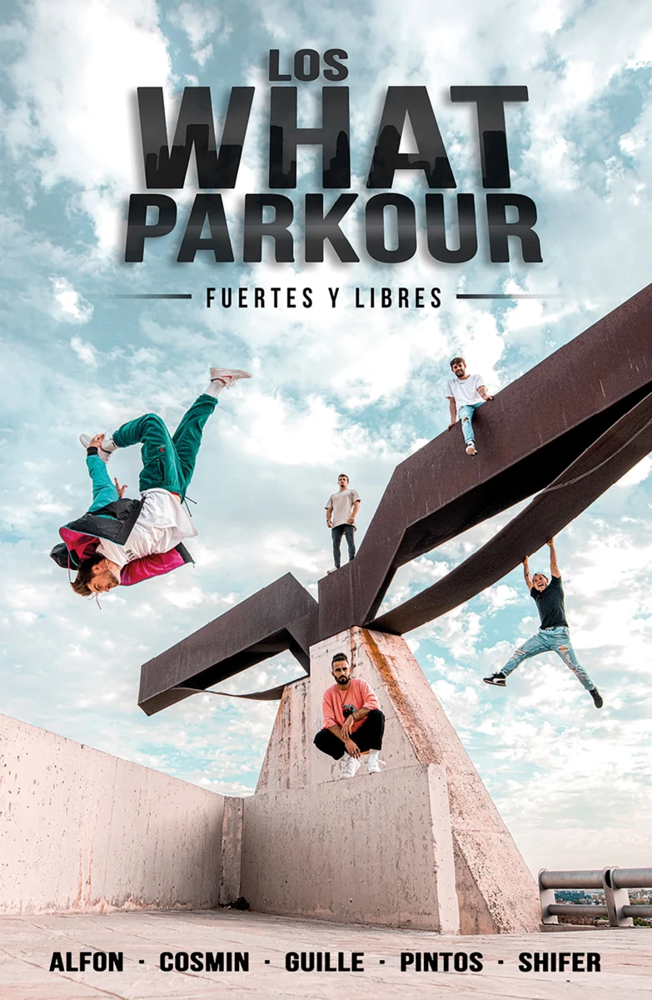

¿Qué es el parkour?
El parkour es una disciplina originaria de Francia. Su objetivo es moverse por la ciudad usando el cuerpo de manera eficiente. El lema "Ser y Durar" refleja la idea de mantener el cuerpo saludable durante mucho tiempo. A lo largo de los años, el parkour ha cambiado y ha influido en otras disciplinas, como el "tricking", que se enfoca en saltos acrobáticos.
Hoy en día, el parkour tiene tres estilos principales: el parkour tradicional, el FreeRunning (una mezcla de parkour y tricking) y el tricking (centrado en acrobacias). Debido al aumento de su popularidad, también se han creado competiciones.

En la imagen aparece el grupo WHAT, un equipo madrileño que comparte sus videos de parkour en YouTube.
 Instagram de WHAT
Instagram de WHAT
Competiciones de parkour
Las competiciones de parkour comenzaron bajo la organización de la Federación Internacional de Gimnasia (FIG). Estas competiciones han impulsado el crecimiento del parkour en los últimos años. Sin embargo, no todos están de acuerdo con ellas. Algunos practicantes creen que fomentan una rivalidad tóxica y que la esencia del parkour se pierde.
En estas competencias, el objetivo no es moverse de manera eficiente, sino realizar el mayor número de acrobacias en el menor espacio posible. Esto puede llevar a movimientos peligrosos y a lesiones. Esta forma de competir va en contra del lema "Ser y Durar", que promueve la salud y la longevidad del cuerpo.
Para ilustrar mejor este punto, dejamos un video de Elis Torhall, uno de los mejores parkouristas del mundo, participando en la competencia RedBull Art of Motion 2022. El video muestra cómo estas competiciones no siguen los principios fundamentales del parkour: